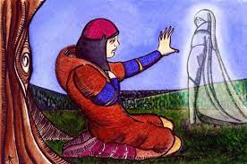

La égloga es un subgénero de la poesía lírica que se dialoga a veces como una pequeña pieza teatral en un acto. De tema amoroso, uno o varios pastores lo desarrollan contándolo en un ambiente campesino donde la naturaleza es paradisíaca y tiene un gran protagonismo la música.
Como subgénero lírico se desarrolla a veces mediante un monólogo pastoril o, más frecuentemente, con un diálogo.
La égloga es una composición en la que el poeta, sacrificado en uno o varios pastores, expresa su amor en un marco idealizado, lleno de belleza y amor.
UN EJEMPLO SERIA: